第4章 不基于模型的预测¶
前一章讲解了如何应用动态规划算法对一个已知状态转移概率的MDP进行策略评估，或通过策略迭代或者直接的价值迭代来寻找最优策略和最优价值函数，同时也指出了动态规划算法的一些缺点。从本章开始的连续两章内容将讲解个体在不了解环境动力学规则的条件下，直接通过与环境的实际交互来评估一个策略的好坏，或者寻找最优价值函数和最优策略。本章内容的重点是策略评估，也就是预测问题；下一章的重点是利用本章的概念和原理来解决控制问题，即找出最优策略以及最优价值函数。
本章分为3个部分，将分别从理论上阐述基于完整采样的蒙特卡罗强化学习、基于不完整采样的时序差分强化学习以及介于两者之间的n步时序差分学习。这部分内容比较抽象，在讲解理论的同时会通过一些精彩的实例来加深对概念和算法的理解。
4.1 蒙特卡罗强化学习¶
蒙特卡罗强化学习（Monte-Carlo Reinforcement Learning，简称MC强化学习）：个体在不清楚MDP状态转移概率的情况下，直接从所经历过的完整状态序列（Episode）来估计状态的真实价值，并认为某状态的价值等于在多个状态序列中状态所有收获值的平均值。除非例外说明，本文出现的“MC学习”均指的是“MC强化学习”。
完整的状态序列（Complete Episode）：从某一个状态开始，个体与环境交互，直到环境给出终止状态的奖励为止。完整的状态序列不要求起始状态一定是某一个特定的状态，但是要求个体最终要进入环境认可的某一个终止状态。
蒙特卡罗强化学习有如下特点：不依赖状态转移概率，直接从所经历过的完整状态序列中学习，就是用平均收获值代替价值。理论上完整的状态序列越多，结果越准确。
我们可以使用蒙特卡罗强化学习来评估一个给定的策略。基于特定策略π的一个状态序列（Episode）信息可以表示为如下一个序列：
t时刻状态St的收获可以表述为：
其中，T为终止时刻。该策略下某一状态s的价值为：
不难发现，在运用蒙特卡罗算法评估策略时，要针对多个包含同一状态的完整状态序列求得收获值，继而取收获值的平均值。如果一个完整的状态序列中某一需要计算的状态出现在序列的多个位置，也就是说个体在与环境交互的过程中从某个状态出发后又一次或多次返回到该状态（这种现象在第2章讲解“收获的计算”中曾介绍过：一名学生从上“第一节课”开始因“浏览手机”以及在“第三节课”选择“泡吧”后多次重新回到“第一节课”），那么根据收获的定义，在一个状态序列下不同时刻的同一状态计算得到的收获值是不一样的。很明显，在蒙特卡罗强化学习算法中，计算收获时也会碰到这种情况。我们可以采取如下的两种办法之一来应对这种情况：一种是仅把状态序列中第一次出现该状态时的收获值纳入收获平均值的计算中；另一种是针对一个状态序列中每次出现该状态时都计算对应的收获值并纳入收获平均值的计算中。两种方法对应的蒙特卡罗评估分别称为首次访问（First Visit）和每次访问（Every Visit）蒙特卡罗评估。
在求解状态收获的平均值的过程中，我们介绍一种非常实用且不需要存储所有历史收获值的计算方法：累进更新平均值（IncrementalMean）。这种计算平均值的思想也是强化学习的核心思想之一，具体公式如下：
累进更新平均值利用前一次的平均值和当前数据以及数据总个数来计算新的平均值：每产生一个需要计算平均值的新数据 \(X_{k}\) 时，先计算 \(\mathrm{\Delta \cdot \mathrm{x_{k}}}\) 与先前平均值 的差，再将这个差值乘以系数1/k后作为误差来对旧平均值进行修正。如果把该式中平均值和新数据分别看成状态的价值和该状态的收获值，那么该公式就变成递增式的蒙特卡罗法更新状态价值。其公式如下：
在实时或者无法统计准确状态被访问的次数时，可以用一个系数α来代替状态计数的倒数，此时公式变为：
以上就是蒙特卡罗学习方法的主要思想和说明，下文将介绍另一种强化学习方法：时序差分强化学习。
4.2 时序差分强化学习¶
时序差分强化学习（Temporal-Difference ReinforcementLearning，简称TD学习）：个体从采样得到的不完整的状态序列进行强化学习。该方法通过合理的自举法（Bootstrapping，或称为引导法），先估计某状态在该状态序列完成后可能得到的收获，并在此基础上利用前文所述的累进更新平均值的方法得到该状态的价值，再通过不断的采样来持续更新这个价值。除非例外说明，本文出现的“TD学习”指的均是“TD强化学习”。
具体地说，在TD学习中，算法在估算某一个状态的收获时用离开该状态的即刻奖励 \(R_{t+1}\) 与下一时刻状态 \(S_{t+1}\) 的预估状态价值乘以衰减系数γ，公式如下：
其中， \(R_{t + 1} + \gamma V \left( S_{t + 1} \right)\) 称为TD目标值， \(R_{t + 1} + \gamma V {\left( S_{t + 1} \right)} - V {\left( S_{t} \right)}\) 称为TD误差。
自举法（Bootstrapping）：用TD目标值代替收获Gt的过程。
不管是MC学习还是TD学习，都不再需要知道某一状态所有可能的后续状态以及对应的状态转移概率，因此也不再像动态规划算法那样需要通过进行全宽度的回溯来更新状态的价值。MC学习和TD学习使用的都是通过个体与环境进行实际交互所生成的一系列状态序列来更新状态的价值。这在解决大规模问题或者不清楚环境规则（动力学特征）的问题时十分有效。不过MC学习和TD学习也有着很明显的差别。下文将通过一个例子来详细阐述这两种学习方法的特点。
想象一下个体如何预测下班后开车回家整个行程所花费的时间。假设在回家的路上个体会依次经过一段高速公路、普通公路和自家附近街区共3段路程，会经历在下班的路上可能发生的各种情况，例如是否下雨、高速路况的实时变化、普通公路是否堵车等。这些在3段路程上可能经历的各种情况与个体共同形成了个体的状态。当个体处于每一种状态下时，它对还需要多久才能到家有一个经验性的估计。表4.1的“既往经验预计MC（仍需耗时）”列给出了这个经验估计，基本反映了各个状态对应的价值。通常个体对下班回家总耗时的预估是30分钟。
表4.1 驾车返家数据（单位：分钟）¶
| 状态 | 已耗时 | 既往经验预计MC | 更新 (α=1) | TD 更新 (α=1) | |||
| 仍需耗时 | 总耗时 | 仍需耗时 | 总耗时 | 仍需耗时 | 总耗时 | ||
| 离开办公室 | 0 | 30 | 30 | 43 | 43 | 40 | 40 |
| 取车时下雨 | 5 | 35 | 40 | 38 | 43 | 30 | 35 |
| 驶离高速 | 20 | 15 | 35 | 23 | 43 | 20 | 40 |
| 跟在卡车后 | 30 | 10 | 40 | 13 | 43 | 13 | 43 |
| 家附近街区 | 40 | 3 | 43 | 3 | 43 | 3 | 43 |
| 返回家中 | 43 | 0 | 43 | 0 | 43 | 0 | 43 |
假设现在个体下班且准备回家，当他花费了5分钟从办公室走到车旁时发现下雨了，此时根据既往经验，估计还需要35分钟才能到家，因此整个行程将预估耗时40分钟。随后进入高速公路，路况非常好，一共仅用20分钟就离开了高速公路，此时他根据经验预估通常再需要15分钟就能到家，加上已经过去的20分钟，他将这次返家预计总耗时修正为35分钟，比先前估计的少了5分钟。但是当他进入普通公路时发现交通流量较大，不得不跟在一辆卡车后面龟速行驶。这个时候距离从办公室出发已经过去了30分钟，根据以往的经验，他估计还需要10分钟才能到家，那么现在对回家总耗时的预估又回到了40分钟。最后在出发40分钟后到达家附近的街区，根据经验，他预估还需要3分钟就能到家。此后没有再出现新的情况，最终他在出发43分钟后到达家中。经过这一次完整的下班回家经历，他对处在途中各种状态下仍需耗时多久返家（对应于各状态的价值）有了新的估计，但是分别使用MC学习算法和TD学习算法得到的对于各状态的价值（即仍需耗时多久返家）的更新结果和更新时机是不一样的。
如果使用MC学习算法，那么在整个驾车返家的过程中，对于所处的每一个状态（例如“取车时下雨”“离开高速公路”“被迫跟在卡车后”“进入街区”等），都不会立即更新对应的返家仍需耗时的估计，仍然分别是先前的35分钟、15分钟、10分钟和3分钟。只有当他到家发现整个行程耗时43分钟后，通过用实际总耗时减去到达某状态时的已耗时，就可以计算出在本次返家过程中实际到达各状态时仍需时间分别为：38分钟、23分钟、13分钟和3分钟。如果选择修正系数为1，那么这些新的耗时将成为今后在各状态时预估返家仍需的耗时，相应的整个行程的预估耗时被更新为43分钟。
如果使用TD学习算法，则是另外一回事。当个体取车发现下雨时，根据经验会认为还需要35分钟才能返家，此时他将立刻更新返家总耗时的估计（仍需的预估35分钟加上离开办公室到取车现场花费的5分钟，即40分钟）。同理，当驶离高速公路时，根据经验对到家还需时间的预计为15分钟，但由于之前在高速公路上较为顺利，节省了不少时间，在第20分钟时已经驶离高速，实际从取车到驶离高速只花费了15分钟，则此时立即更新从取车时下雨到到家所需的时间为30分钟，而整个回家所需时间更新为35分钟。驶离高速后在普通公路上又行驶了10分钟被堵，预计还需10分钟才能返家时，对于刚才驶离高速公路返家仍需耗时又做了更新，将不再是根据既往经验预估的15分钟，而是现在的20分钟，加上从出发到驶离高速已花费的20分钟，整个行程耗时预估被更新为40分钟。直到花费了40分钟只到达家附近的街区预计还有3分钟才能到家时，更新在普通公路上对于返家仍需耗时的预计为13分钟。最终按预计3分钟后进入家门，不再更新剩下的仍需耗时。
通过比较可以看出，MC学习算法仅在整个行程结束后才更新各个状态的仍需耗时，而TD学习算法每经过一个状态就会根据在这个状态与前一个状态之间实际所花时间来更新前一个状态的仍需耗时。图4.1用折线图直观地显示了分别使用MC学习和TD学习算法时预测的驾车回家总耗时的区别。需要注意的是，在这个例子中，与各状态价值相对应的指标并不是图中显示的驾车返家总耗时，而是处于某个状态时驾车返家的仍需耗时。
TD学习比MC学习能更快速、灵活地更新对状态的价值估计，这在某些情况下具有非常重要的实际意义。回到驾车返家这个例子中，假如我们给驾车返家制定一个新的目标：不再以耗时多少来评估状态价值，而是要求安全平稳地返回家中。考虑如下的一次驾车回家的路上突然碰到的险情：对面开过来一辆车，感觉要迎面相撞，严重的话甚至会威胁生命，不过双方驾驶员都采取了紧急措施没有让险情实际发生，最后平安到家。如果使用蒙特卡罗学习，路上发生的这一险情可能引发的极大负值奖励将不会被考虑，不会更新在碰到此类险情时状态的价值；而在使用TD学习时，碰到这样的险情会立即大幅调低这个状态的价值，并在今后再次碰到类似情况时采取其他行为，例如降低速度等来让自身处在一个价值较高的状态中，尽可能避免意外事件的发生。
蒙特卡罗学习（a=1）
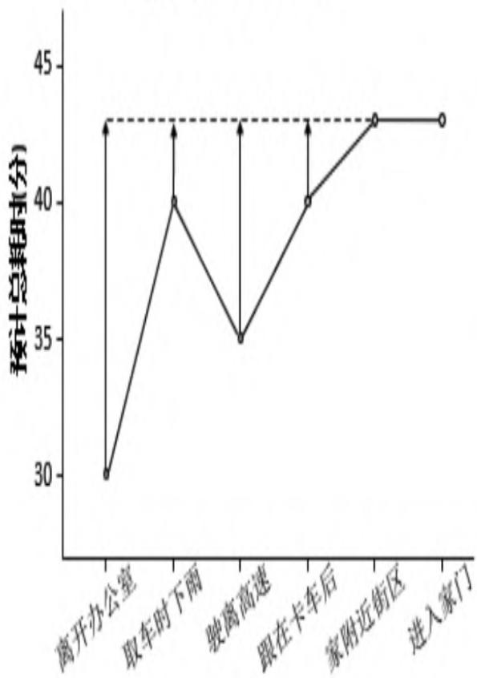
状态
时序差分学习（a=1）
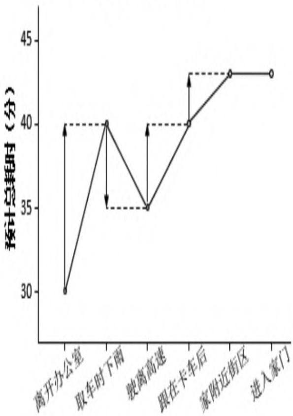
状态
图4.1 MC学习和TD学习在驾车返家示例中的比较
通过驾车返家这个例子，我们应该能够认识到：TD学习在知道结果之前就可以学习，也可以在没有结果时学习，还可以在持续进行的环境中学习，而MC学习要等到最后结果才能学习。TD学习在更新状态价值时使用的是TD目标值，即基于即时奖励和下一状态的预估价值来替代当前状态在状态序列结束时可能得到的收获，它是当前状态价值的有偏估计，而MC学习使用实际的收获来更新状态价值，是某一策略下状态价值的无偏估计。TD学习存在偏倚（Bias）的原因在于其更新价值时使用的也是后续状态预估的价值，如果能使用后续状态基于某策略的真实TD目标值（True TD Target）来更新当前状态价值，那么此时的TD学习得到的价值也是实际价值的无偏估计。虽然绝大多数情况下TD学习得到的价值是有偏估计的，但是其方差（Variance）却较MC学习得到的方差要低，且对初始值敏感，通常比MC学习更加高效，这也主要得益于TD学习价值更新灵活，对初始状态价值的依赖较大。我们将继续通过一个示例来剖析TD学习和MC学习的特点。
假设在一个强化学习问题中有A和B两个状态，模型未知，不涉及策略和行为，仅涉及状态转移和即时奖励，衰减系数为1。现有如表4.2所示的8个完整状态序列的经历，其中除了第一个状态序列发生了状态转移外，其余7个完整的状态序列均只有一个状态。根据现有信息计算状态A、B的价值分别是多少？
表4.2 A、B状态转移经历
| 序号 | 状态转移及即时奖励 |
| 1 | A:0 B:0 |
| 2 | B:1 |
| 3 | B:1 |
（续表）
| 序号 | 状态转移及即时奖励 |
| 4 | B:1 |
| 5 | B:1 |
| 6 | B:1 |
| 7 | B:1 |
| 8 | B:0 |
下面分别使用MC学习算法和TD学习算法来计算状态A、B的价值。
先考虑MC算法，在8个完整的状态序列中，只有第一个序列中包含状态A，因此A价值仅能通过第一个序列来计算，也就等同于计算该序列中状态A的收获值：
状态B的价值需要通过状态B在8个序列中的收获值来平均，其结果是6/8。因此在使用MC学习算法时，状态A、B的价值分别为0和6/8。
考虑应用TD学习算法。TD学习算法在计算状态序列中某状态价值时是应用其后续状态的预估价值来计算的，在8个状态序列中，状态B总是出现在终止状态中，因而直接使用终止状态时获得的奖励来计算价值，再针对状态序列数计算平均，这样得到的状态B的价值依然是6/8。状态A只存在于第一个状态序列中，直接使用包含状态B价值的TD目标值来得到状态A的价值，由于状态A的即时奖励为0，因此计算得到的状态A的价值与B的价值相同，即为6/8。
TD学习算法在计算状态价值时利用了状态序列中前后状态之间的关系，由于已知信息仅有8个完整的状态序列，而且状态A的后续状态100%是状态B，而状态B始终作为终止状态，有1/4的概率获得奖励0、3/4的概率获得奖励1。符合这样状态转移概率的MDP如图4.2所示。可以看出，TD学习算法试图构建一个 \(\text{MDP}\langle S, A, \hat{P}, \hat{R}, \gamma\rangle\) 并使得这个MDP尽可能符合已经产生的状态序列，也就是说TD学习算法将根据已有经验估计状态间的转移概率：
同时估计某一状态的即时奖励：
最后计算该MDP的状态函数，如图4.2所示。
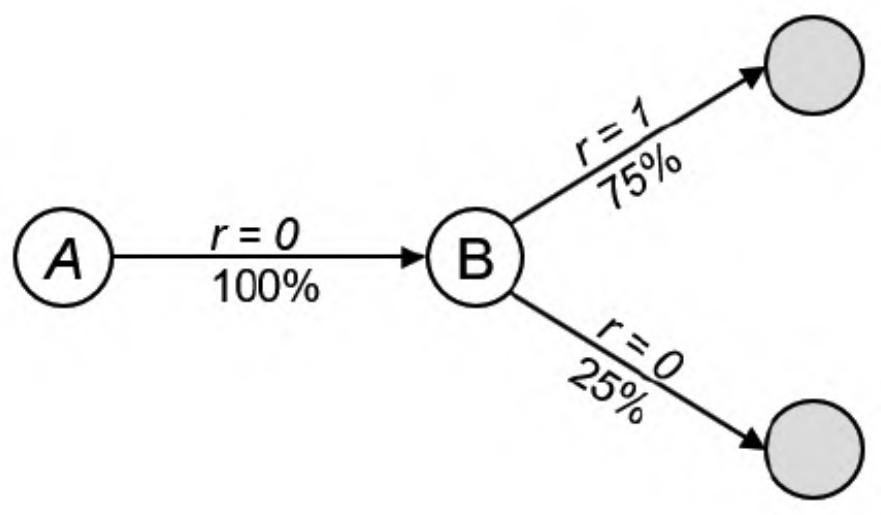
图4.2 TD算法构建的MDP
MC学习算法直接依靠完整状态序列的奖励得到的各状态对应的收获值来计算状态价值，因而这种算法是以最小化收获值与状态价值之间均方差为目标的：
通过上面的示例，我们能体会到TD学习算法与MC学习算法之间的另一个差别：TD算法使用了MDP问题的马尔可夫性质，在具有马尔可夫性质的环境下更有效；但是MC学习算法并不利用马尔可夫性质，适用范围不限于具有马尔可夫性质的环境。
本章阐述的蒙特卡罗（MC）学习算法、时序差分（TD）学习算法和上一章讲述的动态规划（DP）算法都可以用来计算状态价值。它们的特点也是十分鲜明的，前两种是在不依赖模型情况下的常用方法，其中MC学习需要完整的状态序列来更新状态价值、TD学习不需要完整的状态序列；DP学习是以模型为依据来计算状态价值的方法，通过计算一个状态S所有可能的转移状态S及其转移概率以及对应的即时奖励来计算这个状态S的价值。
在是否使用自举的数据上，MC学习并不使用自举的数据，而是使用实际产生的奖励值来计算状态价值；TD和DP用后续状态的预估价值作为自举的数据来计算当前状态的价值。
在是否采样上，MC和TD不依赖模型，都是使用个体与环境实际交互产生的采样状态序列来计算状态价值，而DP依赖状态转移概率矩阵和奖励函数，考虑以某一个状态的所有可能后续状态这种全宽度的方式来计算状态价值。可以近似地认为DP学习是全宽度的采样，但由于是依赖概率转移矩阵来直接计算的，因此并不需要发生真实的采样。
图4.3、图4.4和图4.5非常直观地展现了3种学习算法的区别。
·MC学习算法：深度采样学习。一次学习经历完整的状态序列，使用实际收获值更新状态预估价值，如图4.3所示。
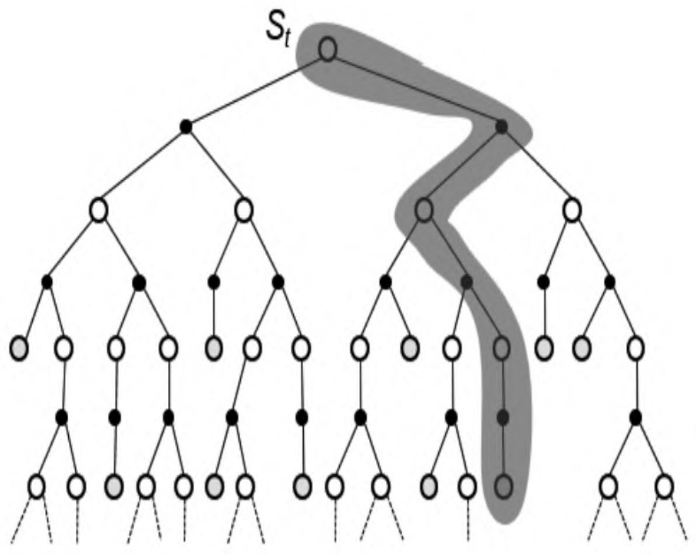
图4.3 MC学习深度采样回溯
·TD学习算法：浅层采样学习。一次学习可以经历不完整的状态序列，使用后续状态的预估状态价值来预估收获值，再更新当前状态价值，如图4.4所示。
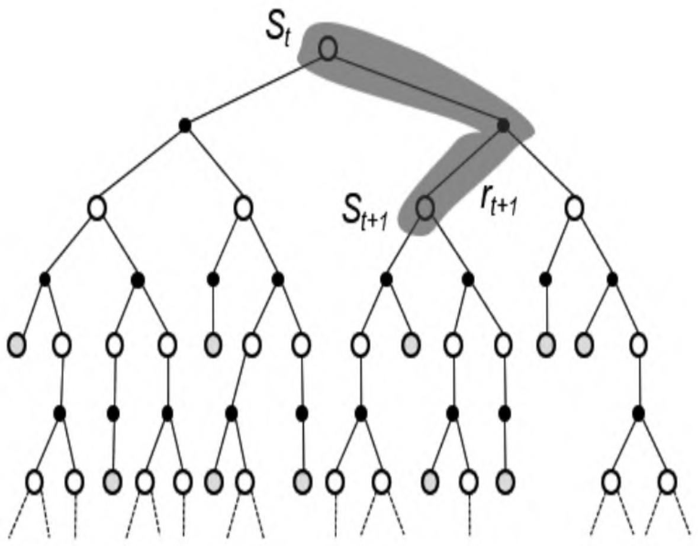
图4.4 TD学习浅层采样回溯
·DP学习算法：浅层全宽度学习。依据模型，全宽度地使用后续状态预估价值来更新当前状态价值，如图4.5所示。
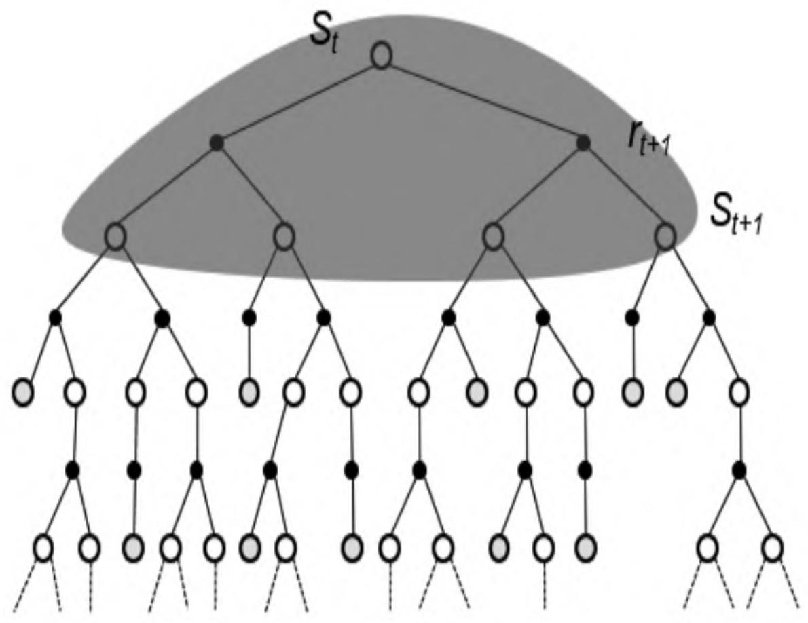
图4.5 DP学习浅层全宽度（采样）回溯
综合上述3种学习方法的特点，可以小结如下：使用单个采样，同时不经历完整的状态序列更新价值的算法是TD学习；使用单个采样，依赖完整状态序列的算法是MC学习；考虑全宽度采样，对每一个采样经历只考虑后续一个状态时的算法是DP学习；既考虑所有状态转移的可能性又依赖完整状态序列的算法是穷举搜索法（ExhaustiveSearch）。
4.3 n步时序差分学习¶
前面章节所介绍的TD学习算法实际上都是TD(0)算法，括号内的数字0表示的是在当前状态在后续状态中只多看下一步的状态，通过该下一步状态估计的状态价值来更新当前状态的价值。要是让算法多看2步更新状态价值会怎样？这就引入了n步预测的概念。
n步预测指从状态序列的当前状态 \(( S_{t} )\) 开始往序列终止状态方向观察至状态 \(\mathrm{S_{t + n - 1}}\) ，使用这n个状态产生的即时奖励 \(( R_{\mathrm{t + 1}} , R_{\mathrm{t + 2}} , \cdots , R_{\mathrm{t + n}} )\) 以及状态 \(S_{\mathrm{t + n}}\) 预估价值来计算当前状态 \(\ddot{S}_t\) 的价值，如图4.6所示。
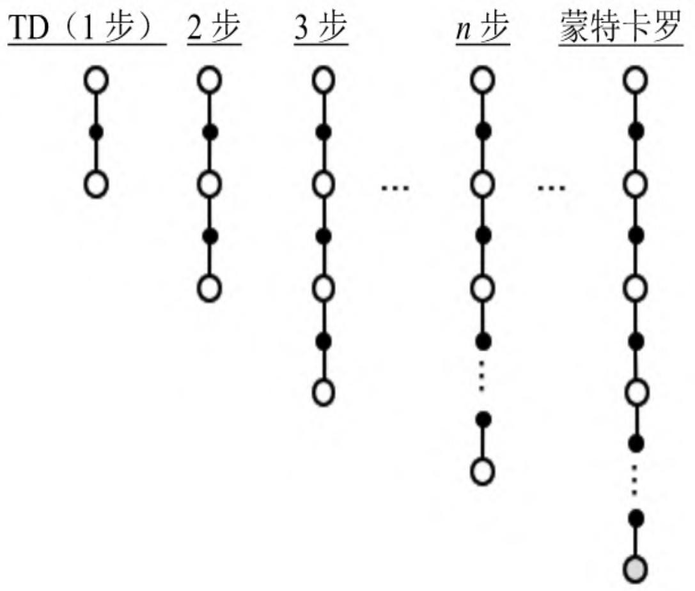
图4.6 n步预测
TD是TD（0）的简写，是基于1步预测的。根据n步预测的定义，可以推出当n=1、2和∞时对应的预测值如表4.3所示。从该表可以看出，MC学习是基于∞步预测的。
表4.3 n步收获
| 步数 | 学习算法 | 收获 |
| n=1 | TD或TD(0) | $G_{t}^{(1)} = R_{t+1} + \gamma V(S_{t+1})$ |
| n=2 | TD或TD(0) | $G_{t}^{(2)} = R_{t+1} + \gamma R_{t+2} + \gamma^{2}V(S_{t+2})$ |
| ... | ... | ... |
| n=∞ | MC | $G_{t}^{(\infty)} = R_{t+1} + \gamma R_{t+2} + \cdots + \gamma^{T-1}R_{T}$ |
定义n步收获为：
由此可以得到n步TD学习对应的状态价值函数的更新公式为：
从式（4.4）和式（4.5）可以得到，当n=1时等同于TD（0）学习，n取无穷大时等同于MC学习。TD学习和MC学习各有优劣，那么会不会存在一个n值，使得预测能够充分利用两种学习的优点得到一个更好的预测效果呢？研究认为不同的问题对应的比较高效的步数不是一成不变的。选择多少步数作为一个较优的计算参数是需要尝试的超参数调优问题。
为了能在不增加计算复杂度的情况下综合考虑所有步数的预测，我们引入一个新的参数λ，并定义：
λ收获：从 \(n = 1\) 到 \(\scriptstyle n=\infty\) 的所有步收获的权重之和。其中，任意一个n步收获的权重被设计为 ，如图4.7所示。通过这样的权重设计，可以得到λ收获的计算公式为：
TD()，收获
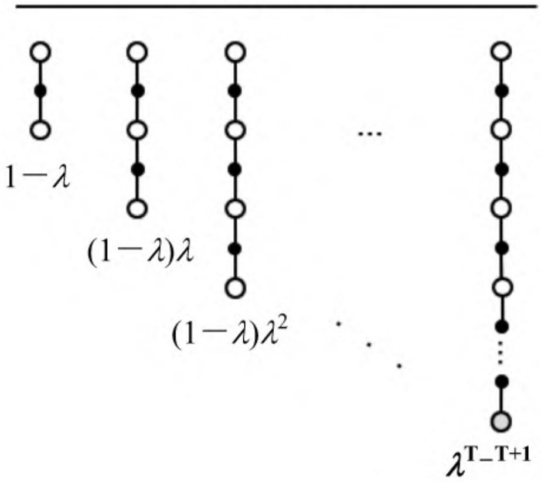
图4.7 λ收获权重分配
对应的TD（λ）被描述为：
图4.8显示了TD（λ）中对于n收获的权重分配，左侧阴影部分是3步收获的权重值，随着n的增大，其n收获的权重呈几何级数的衰减。当在T时刻到达终止状态时，未分配的权重（右侧阴影部分）全部给予终止状态的实际收获值。如此设计可以使一个完整的状态序列中所有的n步收获的权重加起来为1，离当前状态越远的收获其权重越小。
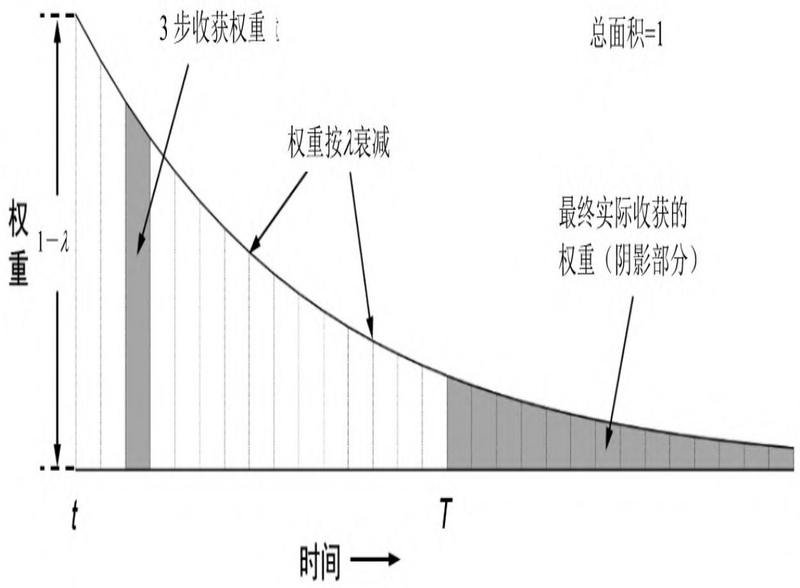
图4.8 TD（λ）对于权重分配的图解
1.前向认识TD（λ）¶
TD（λ）的设计使得在状态序列中一个状态的价值V \(( S_{t} )\) 由 \(G_t^{(\lambda)}\) 得到，而后者又间接由所有后续状态价值计算得到，因此可以认为更新一个状态的价值需要知道所有后续状态的价值。也就是说，必须要经历完整的状态序列获得包括终止状态的每一个状态的即时奖励，才能更新当前状态的价值。这和MC算法的要求一样，因此TD（λ）算法有着和MC算法一样的劣势。λ取值区间为[0,1]，当λ=1时对应的就是MC算法，这给实际计算带来了不便。
2.反向认识TD（λ）¶
反向认识TD（λ）为TD（λ）算法进行在线实时单步更新学习提供了理论依据。为了解释这一点，需要先引入“效用迹”。我们通过一个例子来解释这个概念（见图4.9）。老鼠在依次连续接受了3次响铃和1次亮灯信号后遭到了电击，那么在分析遭电击的原因时，到底是响铃的因素较重要还是亮灯的因素更重要呢？
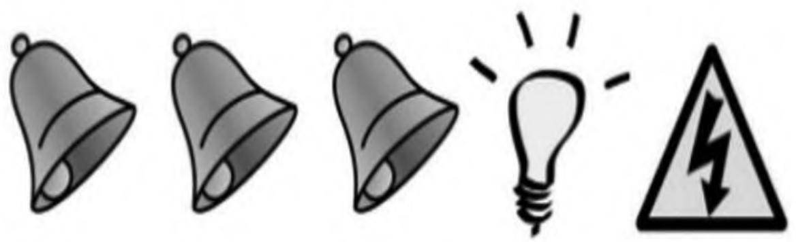
图4.9 是响铃还是亮灯引起了老鼠遭电击
如果把老鼠遭到电击的原因认为是之前接受了较多次数的响铃，就称这种归因为频率启发（Frequency Heuristic）式；而把电击归因于最近少数几次状态的影响，就称为就近启发（Recency Heuristic）式。如果给每一个状态引入一个数值效用（Eligibility，E）来表示该状态对后续状态的影响，就可以同时利用上述两种启发。所有状态的效用值总称为效用迹（Eligibility Traces，ES）。
【定义】
式（4.8）中的 \(\mathbf{1} {\bigl (} S_{t} = s {\bigr )}\) 是一个真判断表达式，表示当 \(S_{t} = s\) 时取值为1，其余条件下取值为0。图4.10给出效用E对于时间t的一个可能的曲线。
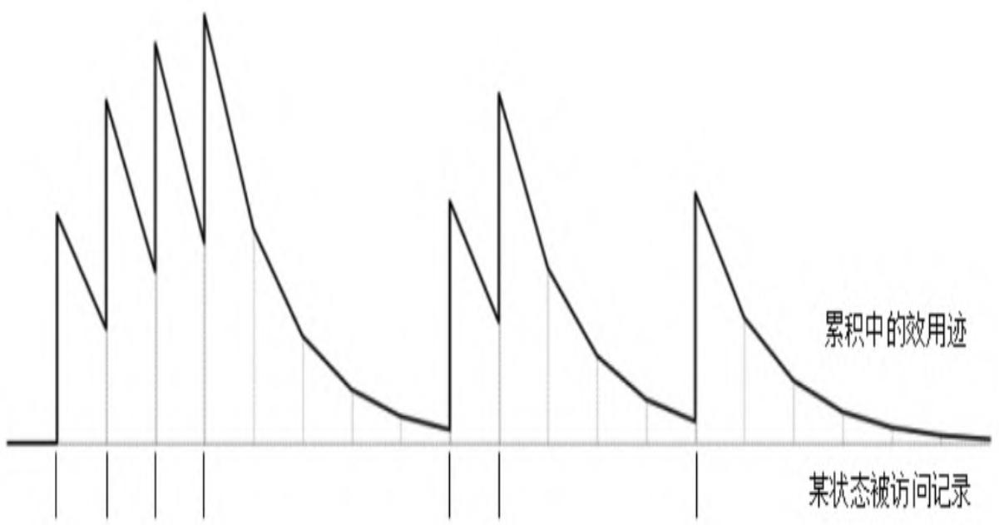
图4.10 某状态一个可能的效用时间曲线
其中，横坐标是时间，横坐标下有竖线的位置代表当前时刻的状态为s，纵坐标是效用值。从中可以看出，当某一状态连续出现时，E值会在一定衰减的基础上有一个单位数值的提高，此时认为该状态将对后续状态的影响较大，如果该状态很长时间没有被学习过程经历，那么该状态的E值将逐渐趋于0，表明该状态对于较远的后续状态价值的影响越来越少。
需要指出的是，针对每一个状态存在一个E值，且E值并不需要等到状态序列到达终止状态才能计算出来，它是根据已经经过的状态序列计算而来的，并且在每一个时刻都对每一个状态进行一次更新。E值存在饱和现象，有一个瞬时最高上限：
E值是一个非常符合神经科学相关理论、非常精巧的设计，可以看成神经元的一个参数，反映了神经元对某一刺激的敏感性和适应性。神经元在接受刺激时会有反馈，在持续刺激时反馈一般也比较强，当间歇一段时间不刺激时，神经元又逐渐趋于静息状态；同时不论如何增加刺激的频率，神经元都有一个最大饱和反馈。如果我们在更新状态价值时把该状态的效用考虑进来，那么价值更新可以表示为：
当λ=0时， \(S_{t} = s\) 一直成立，此时价值更新等同于TD（0）算法：
当λ=1时，在每完成一个状态序列后更新状态价值时，其完全等同于MC学习；在引入了效用迹后，可以每经历一个状态就更新状态的价值，这种实时更新的方法并不完全等同于MC。
当 \(\lambda \in \left( 0 , 1 \right)\) 时，在每完成一个状态序列后更新价值时，基于前向认识的TD（λ）与基于反向认识的TD（λ）完全等效，不过在进行在线实时学习时两者存在一些差别。这里就不详细展开了。
4.4 编程实践：蒙特卡罗学习评估21点游戏的玩家策略¶
本章的编程实践将使用MC学习来评估21点游戏中一个玩家的策略。为了完成这个任务，我们需要先了解21点游戏的规则，并构建一个游戏场景让庄家和玩家在一个给定的策略下进行博弈，生成对局数据。这里的对局数据在强化学习看来就是一个个完整的状态序列组成的集合。接下来使用本章介绍的蒙特卡罗算法评估其中玩家的策略。本节的难点之一在于蒙特卡罗学习算法的实现，之二在于游戏场景的实现以及生成蒙特卡罗算法学习的多个状态序列。
4.4.121点游戏规则¶
21点游戏是一个比较经典的对弈游戏，其规则也有各种版本，为了简化，本文仅介绍由一个庄家（Dealer）和一个普通玩家（Player，下文简称玩家）参与的一个符合基本规则的版本。游戏使用一副除大小王以外的52张扑克牌，游戏者的目标是使手中牌的点数之和不超过21点且尽量大。其中， \(2^{\sim} 10\) 的数字牌点数就是牌面的数字，J、Q、K三类牌均记为10点，牌A既可以记为1点也可以记为11点，由游戏者根据目标自己决定。牌的花色对于计算点数没有影响。
开局时，庄家将依次连续发两张牌给玩家和庄家，其中庄家的第一张牌是明牌，其牌面信息对玩家是开放的，庄家从第二张牌开始的其他牌的信息不对玩家开放。玩家可以根据自己手中牌的点数决定是否继续叫牌（Twist）或停止叫牌（Stick），一旦手中牌点数超过21点就必须停止叫牌。当玩家停止叫牌后，庄家可以决定是否继续叫牌。如果庄家停止叫牌，对局结束，双方亮牌计算输赢。
计算输赢的规则如下：如果双方点数均超过21点或双方点数相同，则为和局；一方为21点，另一方不是21点，则点数为21点的游戏者赢；如果双方点数均不到21点，则点数离21点近的玩家赢。
4.4.2 将21点游戏建模为强化学习问题¶
为了讲解基于完整状态序列的蒙特卡罗学习算法，我们把21点游戏建模成强化学习问题，设定由下面3个参数来集体描述一个状态：庄家的明牌（第一张牌）点数；玩家手中所有牌点数之和；玩家手中是否有可用的牌A（Ace）。前两个参数比较好理解，第三个参数与玩家策略相关，玩家是否有A这张牌比较好理解，不过“可用的牌A”指的是玩家手中的牌A按照目标最大化原则是否被计为1点，如果这张牌A没有被记为1点而是被计为了11点，则称这个牌A为“可用的牌A”，认为玩家有一张“可用的牌A”，否则认为没有“可用的牌A”；当然，如果玩家手中没有牌A，那么也认为是没有“可用的牌A”。
例如，玩家手中的牌为“A，3，6”，那么此时根据目标最大化原则，A将被计为11点，总点数为20点，此时玩家手中的牌A就是“可用的牌A”。假如玩家手中的牌为“A，5，7”，那么此时的牌A不能被计为11点只能按1点计，相应总点数被计为13点，否则总点数将为23点，这时的牌A就不能被称为“可用的牌A”。
根据对状态的设定，我们使用由3个元素组成的元组来描述一个状态。例如，（10，15，0）表示的状态是庄家的明牌是10，玩家手中的牌加起来点数是15，并且玩家手中没有“可用的牌A”；（A，17，1）表述的状态是庄家第一张牌为A，玩家手中牌总点数为17，玩家手中有“可用的牌A”。这样的状态设定不考虑玩家手中的具体牌面信息，也不记录庄家除第一张牌外的其他牌信息。所有可能的状态构成了状态空间。
该问题的行为空间比较简单，玩家只有两种选择：“继续叫牌”或“停止叫牌”。
该问题中的状态如何转换取决于游戏者的行为以及后续发给游戏者的牌，状态间的转移概率很难计算。
可以设定奖励如下：当牌局未结束时，任何状态对应的奖励为0；当牌局结束时，如果玩家赢得对局则奖励值为1，如果玩家输掉对局则奖励值为-1，和局时奖励值均为0。
设定本问题中的衰减因子γ=1。
游戏者在选择行为时都会遵循一个策略。在本例中，庄家遵循的策略是只要手中的牌点数达到或超过17点就停止叫牌。我们先设定玩家遵循的策略是只要手中的牌点数不到20点就继续叫牌，点数达到或超过20点就停止叫牌。我们的任务是评估玩家的这个策略，即计算在该策略下的状态价值函数，也就是计算状态空间中每一个状态对应的价值。
4.4.3 游戏场景的搭建¶
首先来搭建这个游戏场景，实现生成对局数据的功能，要实现的功能包括统计游戏者手中牌的总点数、判断当前牌局信息对应的奖励、实现庄家与玩家的策略、模拟对局的过程以生成对局数据等。为了能尽可能生成较符合实际的对局数据，我们将循环使用一副牌，对局过程中发牌、洗牌、收集已使用牌等过程将得到较为真实的模拟。我们使用面向对象的编程思想，通过构建游戏者类和游戏场景类来实现上述功能。
首先我们导入一些必要的库：
from random import shuffle
from queue import Queue
from tqdm import tqdm
import math
import matplotlib.pyplot as plt
import numpy as np
from mpl_toolkits.mplot3d import Axes3D
from utils import str_key, set_dict, get_dict
经过初步的抽象，我们认为一个单纯的21点游戏者应该至少能记住对局过程中手中牌的信息，知道自己的行为空间，还应该能辨认单张牌的点数以及手中牌的总点数，此外游戏者能够接受发给他的牌以及一局结束后将手中的牌扔掉等。为此我们编写了一个名称为Gamer的游戏者类。代码如下：
class Gamer():
'''游戏者''' def__init__(self, name = "", A = None, display = False):
self.name = name
self.cards = [] # 手中的牌
self.display = display # 是否显示对局
文字信息
self.policy = None # 策略
self.learning_method = None # 学习方法
self.A = A # 行为空间
def__str__(self):
return self.name
def_value_of(self, card):
'''根据牌的字符判断牌的数值大小，牌A被输出为1，牌J、Q、K均为10，
其余按牌面对应的数字取值
Args:
card: 牌面信息 str
Return:
牌的大小数值 int, A 返回 1
'''
try:
v = int(card)
except:
if card == 'A':
v = 1
elif card in ['J', 'Q', 'K']:
v = 10
else:
v = 0
finally:
return v
def get_points(self):
'''统计一手牌的分值，如果使用了牌A的1点，同时返回True
Args:
cards 庄家或玩家手中牌 list ['A','10','3']
Return
tuple (返回牌总点数,是否使用了可用的牌A)
例如['A','10','3'] 返回 (14, False)
['A','10'] 返回 (21, True)
```python
num_of_useable_ace = 0 # 默认没有拿到
Ace
total_point = 0 # 总值
cards = self.cards
if cards is None:
return 0, False
for card in cards:
v = self._value_of(card)
if v == 1:
num_of_useable_ace += 1
v = 11
total_point += v
while total_point > 21 and num_of_useable_ace > 0:
total_point -= 10
num_of_useable_ace -= 1
return total_point, bool(num_of_useable_ace)
def receive(self, cards = []): # 玩家获得一张或多张牌
cards = list(cards)
for card in cards:
self.cards.append(card)
def discharge_cards(self): # 玩家把手中的牌清空，扔牌
self.cards.clear()
def cards_info(self):
'''显示牌面的具体信息''' self._info(" {} {}现在的牌: {} \n".format(self.role, self,self.cards))
def_info(self, msg):
if self.display:
print(msg, end="")
在上面的代码中，实例化一个游戏者可以提供3个参数，分别是该游戏者的姓名（name）、行为空间（A）和是否在终端显示具体信息（display）。其中设置第三个参数主要是由于调试和显示的需要，我们希望一方面游戏在生成大量对局信息时不要输出每一局的细节，另一方面在观察细节时希望能在终端给出某时刻庄家和玩家手中具体牌的信息以及他们的行为等。我们还给游戏者增加了一些辅助属性，比如游戏者姓名、策略、学习方法等，还设置了一个display以及一些显示信息的方法，用来在对局中在终端输出对局信息。在计算单张牌面点数时，借用了异常处理。在统计一手牌的点数时，要考虑到可能出现多张牌A的情况。读者可以输入一些测试牌的信息以观察这两个方法的输出。
在21点游戏中，庄家和玩家都是一个游戏者，我们可以从Gamer类继承出Dealer类和Player类，分别表示庄家和普通玩家。庄家和普通玩家的区别在于两者的角色不同、使用的策略不同。其中，庄家使用固定的策略，还能显示第一张明牌给其他玩家。在本章编程实践中，玩家使用最基本的策略，由于我们的玩家还要进行基于蒙特卡罗算法的策略评估，因此还需要具备构建一个状态的能力。我们扩展的庄家类如下：
class Dealer(Gamer):
def__init__(self, name = "", A = None, display = False):
super(Dealer, self).__init__(name, A, display)
self.role = "庄家"
self.policy = self.dealer_policy
def first_card_value(self):
if self.cards is None or len(self.cards) == 0:
return 0
return self._value_of(self.cards[0])
def dealer_policy(self, Dealer = None):
action = ""
dealer_points, _ = self.get_points()
if dealer_points >= 17:
action = self.A[1] # "停止要牌"
else:
action = self.A[0]
return action
在庄家类的构造方法中声明基类是游戏者（Gamer），这样就具备了游戏者的所有属性和方法。我们给庄家贴上“庄家”角色标签，同时指定策略，在具体的策略方法中规定庄家的牌只要达到或超过17点就不再继续叫牌。
玩家类的代码如下：
class Player(Gamer):
def__init__(self, name = "", A = None, display = False):
super(Player, self).__init__(name, A, display)
self.policy = self.naive_policy
self.role = "玩家" # "庄家"还是“玩家”，庄家是特殊的玩家
def get_state(self, dealer):
dealer_first_card_value =
dealer.first_card_value()
player_points, useable_ace = self.get_points()
return dealer_first_card_value, player_points,
useable_ace
def get_state_name(self, dealer):
return str_key(self.get_state(dealer))
def naive_policy(self, dealer=None):
player_points, _ = self.get_points()
if player_points < 20:
action = self.A[0]
else:
action = self.A[1]
return action
玩家类也继承自游戏者（Gamer），指定其策略为最原始的策略（naive\_policy），规定玩家只要点数小于20点就继续叫牌。玩家同时还会根据当前局面信息得到当前局面的状态，为策略评估做准备。
至此，游戏者这部分的建模工作就完成了。接下来将准备游戏桌、游戏牌、组织游戏对局、判定输赢等功能。我们把所有的这些功能封装在一个名称为Arena的类中。Arena类的构造方法如下：
class Arena():
'''负责游戏管理'''
def__init__(self, display = None, A = None):
self.cards = \
['A', '2', '3', '4', '5', '6', '7', '8', '9', '10', 'J', 'Q', "K"] * 4
self.card_q = Queue(maxsize = 52) # 洗好的牌
self.cards_in_pool = []
## 已经用过的公开的牌
self.display = display
selfEpisodes = []
## 产生的对局信息列表
self.load_cards(self.cards) # 把初始状态的52张牌装入发牌器
self.A = A
## 获得行为空间
Arena类构造函数接受两个额外参数，这两个参数与构建游戏者的参数一样。Arena包含的属性有一副不包括大小王、花色信息的牌（cards）、一个装载洗好了牌的发牌器（cards_q），一个负责收集已经使用过的废牌的池子（cards_in_pool），一个记录了对局信息的列表（episodes），还包括是否显示具体信息以及游戏的行为空间等。在构造一个Arena对象时，我们同时把一副新牌洗好并装进发牌器，这个工作在load_cards方法中完成。我们来看看这个方法的细节。
def load cards(self, cards):
'''把收集的牌洗一洗，重新装到发牌器中 Args:
cards 要装入发牌器的多张牌 list
Return:
None
'''
shuffle(cards) # 洗牌
for card in cards: # deque数据结构只能一个一个添加
self.card_q.put(card)
cards.clear() # 原来
的牌清空
return
这个方法接受一个参数（cards），多数时候将cards_in_pool传给这个方法，也就是把桌面上已使用的废牌收集起来传给这个方法，该方法首先把这些牌的次序打乱，模拟洗牌操作，随后将洗好的牌放入发牌器。完成洗牌、装牌功能。Arena应具备根据庄家和玩家手中的牌的信息判断当前谁赢谁输的能力，该能力通过如下方法
（reward_of）来实现：
def reward_of(self, dealer, player):
'''判断玩家奖励值，附带玩家、庄家的牌点信息 '''
dealer_points, _ = dealer.get_points()
player_points, useable_ace = player.get_points()
if player_points > 21:
reward = -1
else:
if player_points > dealer_points or dealer_points > 21:
reward = 1
elif player_points == dealer_points:
reward = 0
else:
reward = -1
return reward, player_points, dealer_points, useable_ace
该方法接受庄家和玩家参数，计算对局过程中以及对局结束时牌局的输赢信息（reward），返回当前玩家、庄家具体的总点数以及玩家是否有“可用的牌A”等信息。
下面的方法实现Arena对象如何向庄家或玩家发牌的功能：
def serve card to(self, player, n = 1):
'''给庄家或玩家发牌，如果牌不够则将公开牌池的牌洗一洗重新发牌 Args:
player 一个庄家或玩家
n 一次连续发牌的数量
Return:
None
c
cards = [] # 将要发出的牌
for_ in range(n):
## 要考虑发牌器没有牌的情况
if self.card_q.empty():
self._info("\n发牌器没牌了，整理废牌，重新洗牌；")
shuffle(self.cards_in_pool)
self._info("一共整理了{}张已用牌，重新放入发牌器\n".format(\len(self.cards_in_pool)))
assert(len(self.cards_in_pool) > 20)
## 通常发牌器没有牌的时候，玩家已经使用了相当数量的牌了。
## 如果玩家爆点了还持续叫牌，
## 就会导致玩家手中牌变多而发牌器和已使用的牌都很少，需避免这种情况。
## 将收集起来的用过的牌洗好送入发牌器重新使用。
self.load_cards(self.cards_in_pool)
cards.append(self.card_q.get()) # 从发牌器发出一张牌
self._info("发了{}张牌({})给{{}};".format(\n, cards, player.role, player))
##self._info(msg)
player.receive(cards)
## 牌已发给某一玩家
player.cards_info()
def_info(self, message):
if self.display:
print(message, end="")
这个方法（serve\_card\_to）接受一个玩家（player）和一个整数（n）作为参数，表示向该玩家一次发出一定数量的牌，在发牌时如果遇到发牌器里没有牌的情况时，会将已使用的牌收集起来洗好后送入发牌器，随后把需要数量的牌发给某一玩家。代码中的方法（\_info）负责根据条件在终端输出对局信息。
当一局结束时，Arena对象负责把玩家手中的牌回收至已使用的废牌区。这个功能由下面这个方法来完成：
def recycle cards(self, *players):
'''回收玩家手中的牌到公开使用过的牌池中''' if len(players) == 0:
return
for player in players:
for card in player.cards:
self.cards_in_pool.append(card)
player.discharge_cards() # 玩家
手中不再留有这些牌
剩下一个最关键的功能就是如何让庄家和玩家进行一次对局，可编写下面的方法来实现：
def play_game(self, dealer, player):
'''玩一局21点，生成一个状态序列以及最终奖励（中间奖励为0）
Args:
dealer/player 庄家和玩家手中的牌 list
Returns:
tuple: episode, reward
''' ##self.collect_player_cards()
self._info("========== 开始新一局 =======\n")
self.serve_card_to(player, n=2) # 发两张牌给玩家
self.serve_card_to(dealer, n=2) # 发两张牌给玩家
episode = [] # 记录一个对局信息
if player.policy is None:
self._info("玩家需要一个策略")
return
if dealer.policy is None:
self._info("庄家需要一个策略")
return
while True:
action = player.policy(dealer)
## 玩家的策略产生一个行为
self._info("{{}}选择: {};".format(player.role, player, action))
## 记录一个(s,a)
episode.append((player.get_state_name(dealer), action))
if action == self.A[0]:
## 继续叫牌
self.serve_card_to(player) # 发一张牌给玩家
else: # 停止叫牌
break
## 玩家停止叫牌后要计算一下玩家手中的点数，玩家如果爆了，庄家就不用继续了
reward, player_points, dealer_points, useable_ace = \
self.reward_of(dealer, player)
if player_points > 21:
self._info("玩家爆点{}输了，得分: {}\n".format(\player_points, reward))
self.recycle_cards(player, dealer)
selfEpisodes.append((episode, reward))
## 预测时需要形成状态序列（episode list）后统一学习v
## 在蒙特卡罗控制时，可以不需要状态序列，生成一个状态学习一个，下同
self._info("========== 本局结束 ===========\n")
return episode, reward
## 玩家并没有超过21点
self._info("\n")
while True:
action = dealer.policy() # 庄家从其策略中获取一个行为
self._info("{{}}选择: {};".format(dealer.role, dealer, action))
if action == self.A[0]: # 庄家"继续要牌":
self.serve_card_to(dealer)
## 停止要牌是针对玩家来说的，episode不记录庄家动作
## 在状态只记录庄家第一张牌的信息时，可不重复记录(s,a),
## 因为此时玩家不再叫牌，(s,a)均相同
## episode.append((get_state_name(dealer, player), self.A[1]))
else:
break
## 双方均停止叫牌了
self._info("\n双方均停止了叫牌;\n")
reward, player_points, dealer_points, useable_ace = \
self.reward_of(dealer, player)
player.cards_info()
dealer.cards_info()
if reward == +1:
self._info("玩家赢了!")
elif reward == -1:
self._info("玩家输了!")
else:
self._info("双方和局!")
self._info("玩家{}点,庄家{}点\n".format(player_points, dealer_points))
self._info("========== 本局结束 =======\n")
self.recycle_cards(player, dealer) # 回收玩家和庄家手中的牌至公开牌池
## 将刚才产生的完整对局添加至状态序列列表，而蒙特卡罗控制则不需要
selfEpisodes.append((episode, reward))
return episode, reward
这段代码虽然比较长，但是里面包含了许多反映对局过程的信息，使得代码也比较容易理解。该方法接受以一个庄家、一个玩家为参数，产生一次对局，并返回该对局的详细信息。需要指出的是玩家的策略要做到在玩家手中的牌超过21点时强制停止叫牌。其次，在玩家停止叫牌后，Arena对局面进行一次判断，如果玩家超过21点则本局结束，否则提示庄家选择行为。当庄家停止叫牌后，Arena对局面再次进行判断，结束对局并将该对局产生的详细信息记录为一个episode对象，并附加地把包含了该局信息的episode对象联合该局的最终输赢（奖励）登记至Arena的成员属性episodes中。
有了生成一次对局的方法，我们编写下面的代码来一次性生成多个对局：
def play_games(self, dealer, player, num=2,
show_statistic = True):
'''一次性玩多局游戏'''
results = [0, 0, 0] # 玩家负、和、胜局数
selfEpisodes.clear()
for i in tqdm(range(num)):
episode, reward = self.play_game(dealer,
player)
results[1+reward] += 1
if player.learning_method is not None:
player.learning_method(episode ,reward)
if show_statistic:
print("共玩了 {}局，玩家赢 {}/和 {}/输 {}，胜率：
{:.2f}, 不输率：{:.2f}"
.format(num,
results[2], results[1], results[0], results[2]/num, \
(results[2]+results[1])/num))
pass
该方法接受一个庄家、一个玩家、需要产生的对局数量以及是否显示多个对局的统计信息共4个参数，生成指定数量的对局信息，这些信息都保存在Arena的episodes对象中。为了兼容具备学习能力的玩家，我们设置了在每一个对局结束后如果玩家能够从中学习，则提供玩家一次学习的机会。在本章中的玩家不具备从对局中学习改善策略的能力，这部分内容将在下一章详细讲解。如果参数设置为显示统计信息，就会在指定数量的对局结束后显示一共对局了多少局、玩家的胜率等。
4.4.4 生成对局数据¶
至此，我们所有的准备工作就完成了。下面的代码将生成一个庄家、一个玩家、一个Arena对象，并进行20万次的对局：
A = ["继续叫牌", "停止叫牌"]
display = False
## 创建一个玩家、一个庄家，玩家使用原始策略，庄家使用固定策略
player = Player(A = A, display = display)
dealer = Dealer(A = A, display = display)
## 创建一个场景
arena = Arena(A = A, display = display)
## 生成num个完整的对局
arena.play_games(dealer, player, num = 200000)
## 将输出类似如下的结果
## 100%| [REDACTED] | 200000/200000 [00:18<00:00, 11014.64it/s]
## 共玩了200000局，玩家赢58647/和11250/输130103，胜率：0.29，不输率：0.35
4.4.5 策略评估¶
对局生成的数据均保存在对象arena.episodes中，接下来的工作就是使用这些数据对玩家的策略进行评估，代码如下：
# 统计各状态的价值，衰减因子为1，中间状态的即时奖励为0，递增式蒙特卡 罗评估
def policy_evaluate(episodes, V, Ns):
for episode, r in episodes:
for s, a in episode:
ns = get_dict(Ns, s)
v = get_dict(V, s)
set_dict(Ns, ns + 1, s)
set_dict(V, v + (r - v) / (ns + 1), s)
V = {} # 状态价值字典
Ns = {} # 状态被访问的次数节点
policy_evaluate(arenaEpisodes, V, Ns) # 学习v值
其中，V和Ns保存着蒙特卡罗策略评估进程中的价值和统计次数，我们使用的是每次访问计数的方法。我们还可以编写如下方法将价值函数绘制出来：
def
draw_value(value_dict, useable_ace=True, is_q_dict=False, A=None):
## 定义figure
fig=plt.figure()
## 将figure变为3d
ax=Axes3D(fig)
## 定义x, y
x = np.arange(1, 11, 1) # 庄家第一张牌
y = np.arange(12, 22, 1) # 玩家总分数
## 生成网格数据
X, Y = np.meshgrid(x, y)
## 从v字典检索z轴的高度
row, col = X.shape
Z = np.zeros((row,col))
if is_q_dict:
n = len(A)
for i in range(row):
for j in range(col):
state_name =
str(X[i,j]) + "_" + str(Y[i,j]) + "_" + str(useable_ace)
if not is_q_dict:
Z[i,j] = get_dict(value_dict, state_name)
else:
assert(A is not None)
for a in A:
new_state_name = state_name + "_" + str(a)
q = get_dict(value_dict, new_state_name)
if q >= Z[i,j]:
Z[i,j] = q
## 绘制3D曲面
ax.plot_surface(X,Y,Z, rstride = 1, cstride = 1,
color="lightgray")
plt.show()
draw_value(V, useable_ace = True, A = A) # 绘制有“可用的牌A”时的状态价值图
draw_value(V, useable_ace = False, A = A) # 绘制无“可用的牌A”时的状态价值图
结果如图4.11所示。
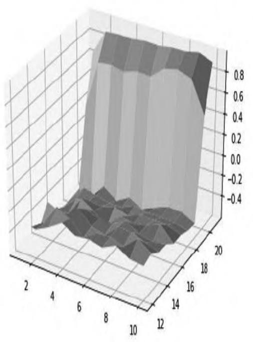
（a）有“可用的牌A”
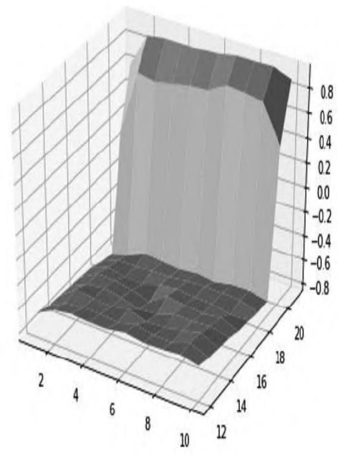
（b）没有“可用的牌 \(A ^{\prime \prime}\)
图4.11 21点游戏玩家原始策略的价值函数（20万次迭代）
我们可以设置各对象display的值为True来生成少量对局并输出对局的详细信息：
## 观察几局对局信息
display = True player.display, dealer.display,
arena.display = display, display, display
arena.play_games(dealer, player, num = 2)
## 将输出类似如下的结果:
## ======== 开始新一局 ========
## 发了2张牌(['4', '8'])给玩家；玩家现在的牌：['4', '8']
## 发了2张牌(['10', 'K'])给庄家；庄家现在的牌：['10', 'K']
## 玩家选择：继续叫牌；发了1张牌(['K'])给玩家；玩家现在的牌：['4', '8', 'K']
## 玩家选择：停止叫牌；玩家爆点22，输了，得分：-1
## ======== 本局结束 ========
## ======== 开始新一局 ========
## 发了2张牌(['9', 'A'])给玩家；玩家现在的牌：['9', 'A']
## 发了2张牌(['5', '7'])给庄家；庄家现在的牌：['5', '7']
## 玩家选择：停止叫牌；
## 庄家选择：继续叫牌；发了1张牌(['7'])给庄家；庄家现在的牌：['5', '7', '7']
## 庄家选择：停止叫牌；
## 双方均停止叫牌；
## 玩家现在的牌：['9', 'A']
## 庄家现在的牌：['5', '7', '7']
## 玩家赢了！玩家20点，庄家19点
## ======== 本局结束 ========
## 共玩了2局，玩家赢1/和0/输1，胜率：0.50，不输率：0.50
在本节的编程实践中，我们构建了游戏者基类并扩展形成了庄家类和玩家类来模拟玩家的行为，同时构建了游戏场景类来负责对局管理。在此基础上使用蒙特卡罗算法对游戏中玩家的原始策略进行了评估。在策略评估环节，我们并没有把价值函数（字典）、计数函数（字典）以及策略评估方法设计为玩家类的成员对象和成员方法，只是为了讲解方便，完全可以将它们设计为玩家的成员变量和方法。在下一章的编程实践中，我们将继续通过21点游戏介绍如何使用蒙特卡罗控制寻找最优策略，在本节建立的Dealer、Player和Arena类将得到复用和扩展。